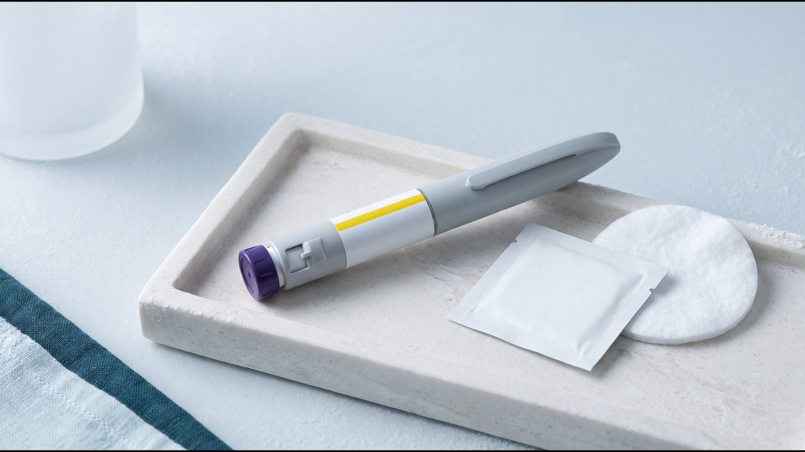
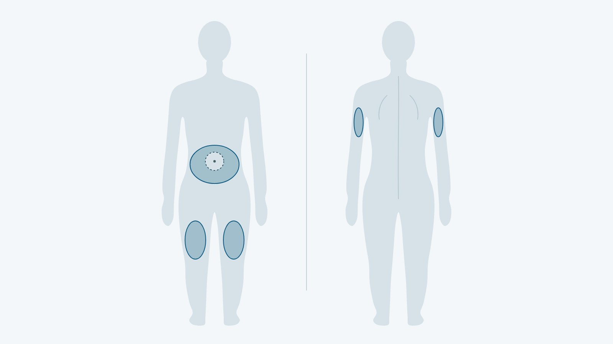
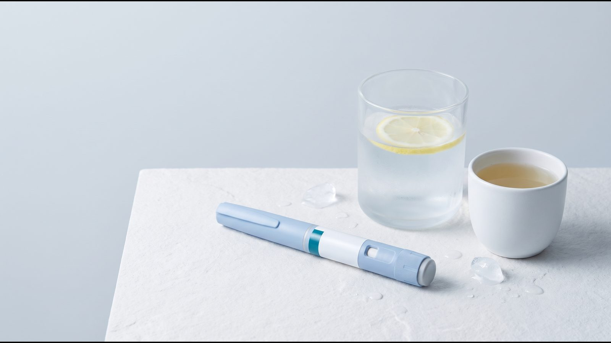

Як колоти Mounjaro®: одноразова ручка і KwikPen, техніка ін'єкції та дози

Як колоти Mounjaro® (Мунджаро, діюча речовина тирзепатид), залежить від форми випуску: у Європейському Союзі є одноразова автоматична ручка, багатодозова ручка KwikPen і флакон. У статті зібрано техніку ін'єкції для обох ручок, місця введення, правила для пропущеної дози і схему дозування за інструкцією EMA (європейська інструкція SmPC, листок-вкладиш та інструкція з використання ручки). Дозу і будь-яку її зміну визначає лікар.
Коротко: як вводять Mounjaro®
Mounjaro® вводять підшкірно 1 раз на тиждень у живіт, стегно або, з допомогою іншої людини, у задню поверхню плеча; час доби і прийом їжі значення не мають. Одноразова ручка вводить дозу автоматично після натискання кнопки, а в KwikPen перед кожною ін'єкцією приєднують нову голку і заповнюють її. За інструкцією EMA лікування починають з 2,5 мг на тиждень, а максимальна доза становить 15 мг на тиждень. Яку дозу вводити вам і коли її підвищувати, вирішує лікар.
Яка у вас ручка
За інструкцією EMA Mounjaro® випускають в одноразовій ручці, багатодозовій ручці KwikPen і флаконі, кожну форму в шести дозуваннях від 2,5 до 15 мг. Одноразова ручка містить 1 дозу і приховану голку, яка вводиться автоматично; KwikPen містить 4 фіксовані тижневі дози, а голки до неї в комплект не входять. Техніка для цих ручок різна, тому нижче її описано окремо; порівняння форм випуску й упаковок є в статті про тирзепатид.
Інструкція з використання радить обговорити з лікарем, медсестрою чи фармацевтом, як правильно робити ін'єкцію, ще до першого самостійного введення.
Техніка ін'єкції крок за кроком
Порядок нижче повторює інструкції з використання EMA для кожної ручки. Людям із порушенням зору не можна користуватися ручкою без допомоги людини, яку навчили з нею працювати.
Одноразова ручка: підготовка і 3 кроки
- Дістати ручку з холодильника. Сірий ковпачок основи не знімати, доки не будете готові до ін'єкції.
- Перевірити етикетку: препарат, дозу, термін придатності; переконатися, що ручка не пошкоджена.
- Перевірити розчин: не заморожений, не каламутний, безбарвний або злегка жовтуватий, без часточок. Бульбашки повітря допустимі.
- Вимити руки і вибрати місце ін'єкції.
- Крок 1. Переконатися, що ручка заблокована, зняти сірий ковпачок основи і викинути його. Назад не надягати, голки не торкатися.
- Крок 2. Притиснути прозору основу рівно до шкіри і розблокувати ручку поворотом кільця.
- Крок 3. Натиснути й утримувати кнопку до 10 секунд. Перше клацання означає початок ін'єкції, друге означає її завершення; про кінець свідчить сірий поршень, який стає видно.
- Покласти використану ручку в контейнер для гострих медичних відходів, не в побутове сміття.
Ручка має скляні деталі: якщо вона впала на тверду поверхню, нею не користуються і роблять ін'єкцію новою ручкою.
KwikPen: ін'єкція із заповненням голки
KwikPen містить 4 фіксовані дози, по одній на тиждень. Голки в комплект не входять: потрібні голки, сумісні з KwikPen, і нова голка для кожної ін'єкції.
- Вимити руки, зняти ковпачок ручки, перевірити назву, дозування і термін придатності. Розчин має бути безбарвним або злегка жовтуватим, без часточок і каламуті.
- Протерти червону внутрішню мембрану, взяти нову голку, зняти паперову наклейку і накрутити голку до упору.
- Зняти зовнішній ковпачок голки (його зберігають) і внутрішній (його викидають).
- Заповнити голку: повернути дозатор до 2 клацань (позиція заповнення), тримаючи ручку голкою вгору, легенько постукати, щоб бульбашки піднялися, натиснути дозатор до упору і порахувати до 5. На кінчику голки має з'явитися трохи препарату.
- Вибрати місце ін'єкції і повернути дозатор до упору, на повну дозу.
- Ввести голку, натиснути дозатор до упору і повільно порахувати до 5, не відпускаючи.
- Вийняти голку і переконатися, що у віконці дози видно позначку повної дози. Якщо її немає, знову ввести голку і завершити ін'єкцію, дозу повторно не набирати; якщо все одно здається, що доза неповна, ін'єкцію не повторюють. Крапля на кінчику голки нормальна і на дозу не впливає.
- Надіти зовнішній ковпачок, відкрутити голку, викинути її в контейнер і закрити ручку ковпачком.
Якщо під час заповнення препарат не з'являється, кроки заповнення повторюють ще не більше 2 разів, потім міняють голку і пробують ще 1 раз; якщо препарат так і не з'явився, діють за інструкцією з використання ручки і звертаються до лікаря, який веде терапію. Зберігати ручку з приєднаною голкою не можна: препарат може витекти, голка заблокуватися, а в ручку потрапити повітря.
Після четвертої дози в ручці лишається трохи препарату, і це нормально: його не вводять і не переливають у шприц. Передавати KwikPen іншим людям не можна навіть зі зміненою голкою, бо так можна передати або отримати серйозну інфекцію.
[КОММЕНТАРИЙ ВРАЧА: що лікар радить перед першою самостійною ін'єкцією Mounjaro® і на які помилки звернути увагу; 2–3 речення]
Зберігання між ін'єкціями
Усі форми зберігають у холодильнику при 2–8 °C і не заморожують; препарат, який був заморожений, не використовують. Одноразову ручку можна тримати поза холодильником при температурі нижче 30 °C сумарно до 21 дня, після чого її викидають. KwikPen після першого використання зберігають у холодильнику або при температурі нижче 30 °C і викидають через 30 днів, навіть якщо в ній лишився препарат; докладніше розповідає стаття про зберігання Ozempic® (семаглутид) і Mounjaro®.
Куди колоти і як чергувати місця
Інструкція EMA називає три зони: живіт щонайменше за 5 см від пупка, стегно і задню поверхню плеча. У плече ін'єкцію робить інша людина. Місце змінюють щотижня: можна колоти в ту саму ділянку, але щоразу в іншу точку в її межах.

Якщо людина коле ще й інсулін, Mounjaro® вводять в інше місце, ніж інсулін. Вибрати найзручніші місця допоможе лікар або медсестра.
Пропущена доза і зміна дня
Mounjaro® бажано вводити в той самий день тижня. Листок-вкладиш радить позначити день першої ін'єкції на коробці або в календарі.
| Ситуація | Що робити за інструкцією EMA |
|---|---|
| Від пропущеної дати минуло 4 дні або менше | ввести дозу якнайшвидше, наступну ввести у звичний день |
| Минуло більше 4 днів | пропущену дозу не вводити, наступну ввести в запланований день |
| Потрібно змінити день ін'єкції | можна, якщо від попередньої дози минуло щонайменше 3 дні |
| Хочеться надолужити пропуск | подвійну дозу не вводять; між двома дозами має минути щонайменше 3 дні |
Після зміни дня ін'єкції продовжують раз на тиждень уже в новий день. Американська інструкція тирзепатиду (препарат Zepbound®, FDA) дає ті самі межі: 4 дні для пропущеної дози і 3 дні між двома дозами.
Схема дозування за інструкцією EMA
Дозу тирзепатиду підвищують поступово, кроками по 2,5 мг. Нижче наведено схему для дорослих з європейської інструкції; чи переходити на наступний крок і коли, вирішує лікар.
| Етап | Доза 1 раз на тиждень | Що вказано в інструкції EMA |
|---|---|---|
| Перші 4 тижні | 2,5 мг | стартова доза |
| Після 4 тижнів | 5 мг | дозу підвищують до 5 мг |
| За потреби | 7,5; 10; 12,5 або 15 мг | кожне підвищення на 2,5 мг не раніше ніж через 4 тижні на поточній дозі |
| Підтримувальні дози | 5, 10 або 15 мг | рекомендовані підтримувальні дози |
| Максимум | 15 мг | максимальна доза 1 раз на тиждень |
Американська інструкція окремо підкреслює, що 2,5 мг призначена для початку лікування і не є підтримувальною дозою. Якщо тирзепатид поєднують із сульфонілсечовиною (таблетками від діабету, які посилюють виділення інсуліну) або інсуліном, лікар може зменшити дозу цих препаратів через ризик гіпоглікемії, тобто надто низького рівня глюкози; у такому разі потрібен самоконтроль глюкози, її регулярне самостійне вимірювання. З метформіном поточну дозу можна не змінювати.
Часті запитання
Чи потрібно гріти ручку перед ін'єкцією?
Ні. Інструкція з використання одноразової ручки прямо зазначає, що доводити ручку до кімнатної температури не потрібно.
Що робити, якщо розблокували ручку і натиснули кнопку, не знявши сірий ковпачок?
Ковпачок у такому разі не знімають. Ручку викидають і роблять ін'єкцію новою.
Що означає третє, тихе клацання під час ін'єкції одноразовою ручкою?
Деякі люди чують тихе клацання перед другим гучним; за інструкцією з використання, це нормальна робота ручки. Від шкіри ручку не відводять до другого гучного клацання. Якщо після ін'єкції сірого поршня не видно, варто звернутися до лікаря, який веде терапію, а ручку до того зберігати так, щоб ніхто не вколовся.
Що робити, якщо після ін'єкції на шкірі крапля крові?
Це нормально. Місце ін'єкції притискають ватним диском або марлею і не розтирають.
Що далі
Перед першою ін'єкцією потрібна консультація: лікар перевірить, чи є показання і чи немає протипоказань, і за потреби призначить аналізи. У Києві ін'єкцію Mounjaro® може зробити медичний спеціаліст, який приїде додому в зручний час. Чим тирзепатид відрізняється від семаглутиду, пояснює порівняння Mounjaro® і Ozempic®, а формат терапії в клініці описано на сторінці Mounjaro®.
Джерела
- Mounjaro: EPAR Product Information (SmPC, Package leaflet, Instructions for use). European Medicines Agency, 2026. https://www.ema.europa.eu/en/documents/product-information/mounjaro-epar-product-information_en.pdf
- ZEPBOUND (tirzepatide) injection: Prescribing Information, Medication Guide. Eli Lilly, FDA / DailyMed, 08/2026. https://dailymed.nlm.nih.gov/dailymed/drugInfo.cfm?setid=487cd7e7-434c-4925-99fa-aa80b1cc776b
Матеріал має інформаційний характер і не замінює консультацію лікаря. Препарати призначає лікар після консультації.
Читайте також
